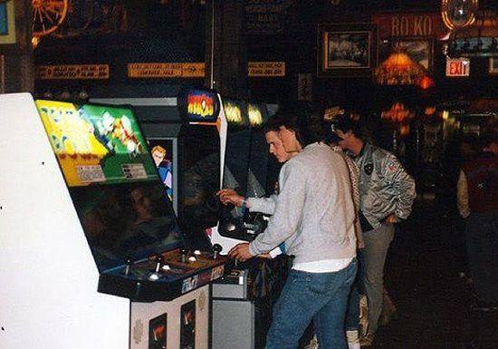
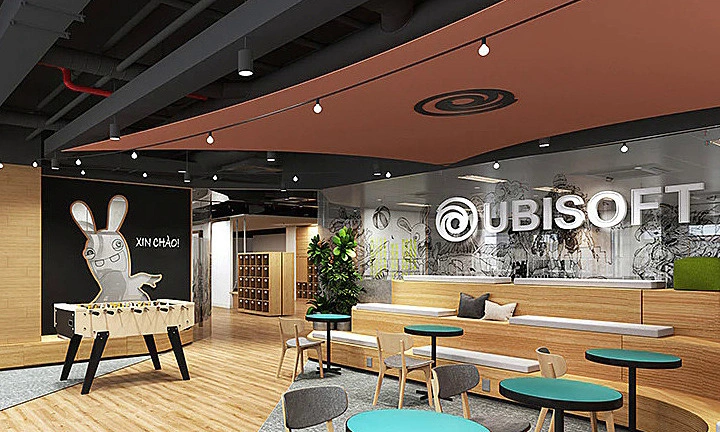
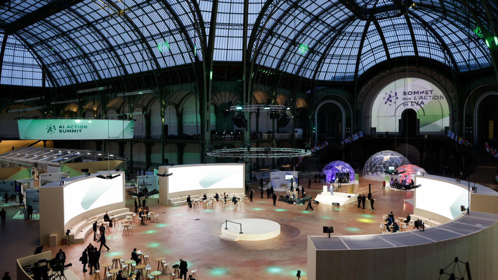

History of Video Games in France
France has long been a vibrant hub for video game innovation and creativity. From the early arcade days to the era of sophisticated interactive narratives, French developers have played a pivotal role in shaping the industry. This rich history reflects not only the evolution of technology but also the cultural influences that continue to inspire creative game design in France.
Early Beginnings and Pioneers
In the early 1980s, with the advent of personal computers and arcade machines, French developers began experimenting with interactive entertainment. Companies like Infogrames, founded in 1983, pioneered game development in Europe by producing innovative titles that resonated with both local and international audiences. These early games, simple in design yet rich in creative ideas, set the stage for a burgeoning industry.
The Rise of Major Companies
The mid-1980s marked the emergence of companies that would become global powerhouses. Ubisoft, founded in 1986, quickly grew from a small studio into one of the world’s leading video game publishers. With critically acclaimed franchises such as Assassin’s Creed, Far Cry, and Rayman, Ubisoft showcased the strength of French creative talent. Other influential studios, like Quantic Dream and Arkane Studios, further solidified France’s reputation on the global stage.
Technological Advancements and Creative Innovation

As gaming technology evolved, French developers embraced new tools and platforms, leading to groundbreaking innovations. The transition from arcade and PC games to console and mobile platforms was met with a spirit of experimentation that pushed the boundaries of interactive storytelling and gameplay mechanics. French studios consistently focused on both technical excellence and narrative depth.
Government Support and Industry Growth
Recognizing the economic and cultural significance of the video game industry, the French government has supported its growth through various initiatives. Tax incentives, research grants, and dedicated funding programs have nurtured a thriving ecosystem, enabling both established companies and startups to invest in cutting-edge research and development.
Cultural Impact and Global Influence
French video games often reflect the country's rich cultural heritage, drawing inspiration from literature, cinema, art, and history. This blend of traditional influences with modern technology creates immersive narratives that captivate audiences worldwide, making French titles influential cultural exports.
Modern Trends and Future Directions
Today, the French gaming industry is dynamic and ever-evolving. With the rise of indie developers and innovative startups, there is a renewed focus on experimental gameplay and storytelling techniques. Emerging trends such as cloud gaming, AI-driven development, and augmented reality are opening up new avenues for creative expression, ensuring that France remains a vital player in shaping the future of interactive entertainment.
Conclusion
From its humble beginnings in the early 1980s to its current status as a powerhouse of global innovation, the history of video games in France is a testament to creativity, resilience, and a commitment to excellence. As the industry moves forward, French developers continue to redefine interactive entertainment, blending tradition with modern innovation.